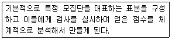
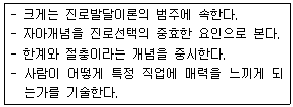
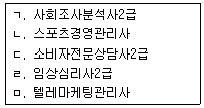
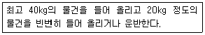
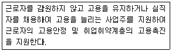
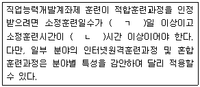
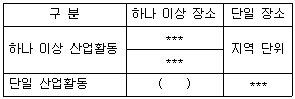
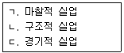
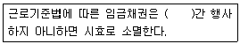
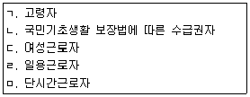

직업상담사-2급 (2018-03-04 기출문제)
1과목: 직업상담학
1. 내담자 중심 상담이론에 관한 설명으로 틀린 것은?
- 다양한 진로 관련 검사 결과에 기초하여 상담을 진행한다.
- Rogers는 직업과 관련된 의사결정에 대해 구체적으로 언급하지 않았다.
- 몇몇 내담자 중심 상담사들은 일반적 적응과 직업적 적응 사이에 관련성이 크지 않다고 보았다.
- 직업정보는 내담자의 입장에서 필요할 때에만 상담과정에 도입한다.
(정답률: 60%)

2. 인지적 명확성 문제의 원인 중 경미한 정신건강 문제의 특성으로 옳은 것은?
- 심각한 약물남용 장애
- 잘못된 결정방식이 진지한 결정 방해
- 경험부족에서 오는 고정관념
- 심한 가치관 고착에 따른 고정성
(정답률: 58%)
3. 상담사가 비밀유지를 파기할 수 있는 경우와 거리가 가장 먼 것은?
- 내담자가 자살을 시도할 계획이 있는 경우
- 비밀을 유지하지 않는 것이 효과적이라고 슈퍼바이저가 말하는 경우
- 내담자가 타인을 해칠 가능성이 있는 경우
- 아동학대와 관련된 경우
(정답률: 89%)
4. 직업상담의 목표와 거리가 가장 먼 것은?
- 적성과 흥미를 탐색하고 확대한다.
- 진로발달이나 직업문제에 대한 처치를 한다.
- 새로운 노동시장의 영역을 개척한다.
- 직업과 관련된 문제해결에 관심을 갖는다.
(정답률: 86%)
5. 생애진로사정 시 전형적인 하루를 탐색할 때 초점을 두어야 하는 요소는?
- 독립적 또는 의존적 성격인가?
- 여가시간에 무엇을 하는가?
- 살아가면서 필요한 자원은 무엇인가?
- 하루를 살면서 가장 좋았던 것은 무엇인가?
(정답률: 83%)
6. Brayfield가 제시한 직업정보의 기능에 해당하지 않는 것은?
- 정보적 기능
- 재조정 기능
- 동기화 기능
- 결정화 기능
(정답률: 70%)
7. 직업상담 초기 접수면접에서 이루어지는 주된 내용은?
- 행동수정
- 과제물 부여
- 내담자 심리평가
- 상담관계 형성
(정답률: 85%)
8. 게슈탈트상담의 상담기법으로 적절하지 않은 것은?
- 꿈을 이용한 작업
- 자기 부분들과의 대화를 통한 자각
- 자각을 증가시키기 위한 숙제의 사용
- 상담사-내담자 사이에 드러나는 전이의 분석
(정답률: 68%)
9. Ginzberg의 진로발달 단계 중 현실기의 하위단계가 아닌 것은?
- 탐색
- 구체화
- 전환
- 정교화
(정답률: 56%)
10. 인지치료에서 다루는 인지적 오류와 그 사례로 옳은 것은?
- 선택적 추론 - “90%의 성공도 나에게는 실패야”
- 양분법적 논리 - “돌다리도 두들겨 보고 건너자”
- 과일반화 - “영어시험을 망쳤으니 이번 시험은 완전히 망칠 꺼야”
- 과소평가 - “나는 이번 시험에 꼭 합격해야해”
(정답률: 87%)
11. 위기상담 시 상담내용에 관한 설명으로 틀린 것은?
- 정서적 지원을 제공한다.
- 정서 발산을 자제하게 한다.
- 희망과 낙관적인 태도를 전달한다.
- 위기 문제에 집중하도록 선택적인 경청을 한다.
(정답률: 73%)
12. MBTI에 관한 설명으로 틀린 것은?
- 개인주의 심리학의 기초를 다진 Adler의 성격유형론을 근거로 개발되었다.
- 성격의 네 가지 양극차원으로 피검자를 분류한다.
- 직업적 대안을 창출하고 양립할 수 있는 직업장면을 찾기 위해 사용된다.
- 직업 불만족의 원인을 탐색하기 위한 용도로 사용된다.
(정답률: 58%)
13. 상담종결 시 내담자의 종결 준비도를 알아볼 수 있는 내용과 거리가 가장 먼 것은?
- 적응능력이 증진되었는가?
- 호소문제나 증상이 줄어들었거나 제거되었는가?
- 다른 사람과 관계를 맺는 수준이 증진되었는가?
- 자신의 감정을 상담자에게 개방할 준비가 되었는가?
(정답률: 84%)
14. 진로상담에서 내담자의 목표 몰입도를 평가하기 위한 상담사의 언어반응으로 적절하지 않은 것은?
- “목표도달을 위해 몇 가지 작업을 할 것입니다. 당신은 필요한 작업을 하는데 기꺼이 응할 수 있나요?”
- “이런 목표로 상담할 때 당신의 동기에 방해가 될 만한 것이 무엇인가요?”
- “우리는 당신의 목표와 행위목표를 구체화시켜 볼 것입니다. 이런 목표를 구체화하는데 서면계약이 도움이 될 것 같네요.”
- “목표를 성취해야 한다고 느끼는 시기는 언제이며, 마음속에 어떤 시간계획을 가지고 있나요?”
(정답률: 47%)
15. 직업상담 시 한계의 오류를 가진 내담자들이 자신의 견해를 제한하는 방법에 해당하지 않는 것은?
- 예외를 인정하지 않는 것
- 불가능을 가정하는 것
- 왜곡되게 판단하는 것
- 어쩔 수 없음을 가정하는 것
(정답률: 66%)
16. 상담의 초기면접 단계에서 일반적으로 고려할 사항이 아닌 것은?
- 통찰의 확대
- 목표의 설정
- 상담의 구조화
- 문제의 평가
(정답률: 59%)
17. 특성-요인 상담에서 Strong과 Schmidt가 중요하게 생각한 상담사의 특성과 거리가 가장 먼 것은?
- 신뢰
- 전문성
- 매력
- 공감
(정답률: 51%)
18. 행동적 상담기법 중 불안을 감소시키는 방법으로 이완법과 함께 쓰이는 것은?
- 강화
- 변별학습
- 사회적 모델링
- 체계적 둔감화
(정답률: 88%)
19. 형태주의적 상담 이론에 관한 설명으로 옳은 것은?
- 융합 : 자신의 요구나 감정 혹은 생각 등을 타인의 것으로 왜곡하여 지각
- 내사 : 부모나 사회의 영향을 받거나 스스로의 경험에 의해 형성
- 투사 : 중요한 타인과 자신과의 경계를 짓지 못하고 의존적인 관계를 형성
- 편향 : 외부의 타인에게 표출할 행동을 자신의 대상으로 행하는 것
(정답률: 65%)
20. 정신분석적 상담에서 훈습의 단계에 해당하지 않는 것은?
- 환자의 저항
- 분석의 시작
- 분석자의 저항에 대한 해석
- 환자의 해석에 대한 반응
(정답률: 57%)
2과목: 직업심리학
21. 경력개발 프로그램 중 종업원 개발 프로그램과 가장 거리가 먼 것은?
- 훈련 프로그램
- 평가 프로그램
- 후견인 프로그램
- 직무순환 프로그램
(정답률: 70%)
22. 직업적응 이론에 관한 설명으로 틀린 것은?
- 직업적응은 미네소타 만족 질문지(MSQ)와 미네소타 충족 척도(MSS)를 통해 측정할 수 있다.
- 직업적응은 개인이 직업 환경과 조화를 이루어 만족하고 유지하도록 노력하는 역동적인 과정이다.
- 직업적응 이론에서는 평가과정에서 주관적인 평가를 먼저 실시하고 이후에 검사도구를 통한 객관적인 평가를 실시할 것을 권유한다.
- 개인은 자신과 환경의 부조화 정도가 받아들일 수 있는 범위라도 부조화를 줄이기 위해 대처행동을 통해 환경에 적응하게 된다.
(정답률: 38%)
23. 심리검사 중 질적 측정도구에 해당하지 않는 것은?
- 역할 놀이
- 제노그램
- 카드 분류
- 경력진단 검사
(정답률: 70%)
24. Cattell이 주장한 결정체적 지능(crystallized intelligence)에 대한 설명으로 옳은 것은?
- 선천적인 지능이다.
- 뇌손상이나 정상적인 노령화에 따라 감소한다.
- 14세까지는 지속적으로 발달되다가 22세 이후 급격히 감소된다.
- 개인의 문화적, 교육적 경험에 따라 영향을 받으며 환경에 따라 40세까지 혹은 그 이후에도 발전 가능한 지능이다.
(정답률: 73%)
25. Williamson이 분류한 임상적 상담 과정을 바르게 나열한 것은?
- 분석→종합→진단→예후→상담→추수
- 분석→진단→종합→상담→예후→추수
- 진단→분석→종합→예후→상담→추수
- 진단→종합→분석→상담→예후→추수
(정답률: 76%)
26. 다음 설명에 해당하는 심리검사 용어는?

- 규준
- 표준
- 준거
- 참조
(정답률: 57%)
27. 일반적성검사(GATB)에서 측정하는 직업적성이 아닌 것은?
- 손가락 정교성
- 언어적성
- 사무지각
- 과학적성
(정답률: 70%)
28. 스트레스의 예방 및 대처 방안으로 틀린 것은?
- 가치관을 전환시켜야 한다.
- 과정중심적 사고방식에서 목표지향적 초고속 심리로 전환해야 한다.
- 균형있는 생활을 해야 한다.
- 취미ㆍ오락을 통해 생활장면을 전환하는 활동을 규칙적으로 해야 한다.
(정답률: 82%)
29. Holland 이론의 직업환경 유형과 대표 직업간 연결이 틀린 것은?
- 현실성 - 목수, 트럭운전사
- 탐구형 - 심리학자, 분자공학자
- 사회형 - 정치가, 사업가
- 관습형 - 사무원, 도서관 사서
(정답률: 75%)
30. 다음은 어떤 이론에 관한 설명인가?

- 사회학습이론
- 직업포부 발달이론
- 가치중심적 진로이론
- 사회인지적 진로이론
(정답률: 56%)
31. 진로선택 사회학습이론에 관한 설명으로 틀린 것은?
- 유전적 요인과 특별한 능력이 진로결정 과정에 미치는 영향을 고려하지 않았다.
- 진로선택 결정에 영향을 미치는 삶의 사건들에 관심을 두고 있다.
- 전체 인생에서 각 개인의 독특한 학습 경험이 진로선택을 이끄는 주요한 영향 요인을 발달시킨다고 보았다.
- 개인의 신념과 일반화는 사회학습 모형에서 매우 중요하다고 보았다.
(정답률: 66%)
32. 직무 수행자의 직무행동 가운데 성과와 관련하여 효과적인 행동과 비효과적인 행동을 구분하여 그 사례를 수집하고, 이러한 사례를 통해 직무 성과에 효과적인 행동양식을 추출하여 분류하는 방법은?
- 다면평가법
- 직무기술법
- 작업일지법
- 결정사건법
(정답률: 59%)
33. Bandura가 제시한 것으로, 어떤 과제를 수행하는 데 있어서 자신의 능력에 대한 믿음이 과제 시도의 여부와 과제를 어떻게 수행하는지를 결정한다는 것은?
- 자기통제 이론
- 자기판단 이론
- 자기개념 이론
- 자기효능감 이론
(정답률: 80%)
34. 다음 중 직무분석의 목적으로 가장 적합한 것은?
- 해당 직무에서 어떤 활동이 이루어지고 작업조건이 어떠한지를 기술하고, 직무를 수행하는 사람에게 요구되는 지식, 기술, 능력 등의 정보를 활용하는 데 있다.
- 조직 내에서 직무들의 내용과 성질을 고려하여 직무들 간의 상대적인 가치를 결정함으로써 여러 직무들에 대해 서로 다른 임금수준을 결정하는 데 있다.
- 개인이 직무를 얼마나 잘 수행하는지를 알아내어 인사관리와 개인발전 및 연구에 활용하는 데 있다.
- 직무수행의 결과를 예측하기 위하여 여러 직무들의 준거를 개발하고 선발결정을 하는데 있다.
(정답률: 76%)
35. 직무 스트레스에 관한 설명으로 틀린 것은?
- 직장 내 소음, 온도와 같은 물리적 요인이 직무 스트레스를 유발할 수 있다.
- 직무 스트레스를 일으키는 심리사회적 요인으로 역할 갈등, 역할 과부하, 역할 모호성 등이 있다.
- 사회적 지지가 제공되면 우울이나 불안 같은 직무 스트레스 반응이 감소한다.
- 직무 스트레스는 직무만족과 부정적 관계에 있으며, 모든 스트레스는 항상 직무수행 성과를 떨어뜨린다.
(정답률: 76%)
36. 개인의 특성과 직업을 구성하는 요인에 관심을 두며, 인생의 특정한 시기에서 의사결정을 하려고 할 때에 도움을 줄 수 있는 이론을 제시한 학자에 해당하지 않는것은?
- Williamson
- Parsons
- Hull
- Roe
(정답률: 51%)
37. 조직 구성원의 경력개발을 위하여 전문가로부터 개인의 능력, 성격, 기술 등에 관해 종합적인 평가를 받는 프로그램은?
- 평가 기관(assessment center)
- 경력자원 기관(career resource center)
- 경력 워크숍(career worshop)
- 경력연습 책자(career workbook)
(정답률: 67%)
38. 조직에서의 스트레스를 매개하거나 조절하는 요인들 중 개인 속성이 아닌 것은?
- type A형과 같은 성격 유형
- 친구나 부모와 같은 주변인의 사회적 지지
- 상황을 개인이 통제할 수 있느냐에 대한 신념
- 부정적인 사건들에서 빨리 벗어나는 능력
(정답률: 69%)
39. 한 연구자가 검사를 개발한 후 요인분석을 통해 그 검사가 검사개발의 토대가 되는 이론을 잘 반영하는지를 확인하였는데, 이 과정은 무엇을 확인하기 위한 것인가?
- 내용타당도
- 동시타당도
- 준거타당도
- 구성타당도
(정답률: 60%)
40. 검사의 신뢰도에 영향을 주는 요인과 가장 거리가 먼 것은?
- 개인차
- 문항수
- 규준집단
- 문항에 대한 반응수
(정답률: 53%)
3과목: 직업정보론
41. 한국표준산업분류의 대분류별 제10차 개정 내용으로 틀린 것은?
- A 농업, 임업 및 어업 : 채소작물 재배업에 마늘, 딸기 작물 재배법을 포함하였으며, 어업에서 해면은 해수면으로, 수산 종묘는 수산 종자로 명칭을 변경하였다.
- D 전기, 가스, 증기 및 공기조절 공급업 : 전기자동차 판매 증가 등 관련 산업 전망을 감안하여 전기 판매업 세분류를 신설하였다.
- H 운수 및 창고업 : 철도운송업을 철도여객과 화물 운송업으로 세분하였고, 항공운송업을 항공 여객과 화물 운송업으로 변경하였다.
- O 공공 행정, 국방 및 사회보장 행정 : 포괄범위를 고려하여 통신행정을 우편 및 통신행정으로 변경하였으며, 나머지 행정 부문은 정부 직제 및 기능 등을 고려하여 전면 재분류하였다.
(정답률: 64%)
42. 국가기술자격 서비스분야 등급에서 응시자격의 제한이 없는 종목을 모두 고른 것은?

- ㄱ,ㄴ,ㄹ
- ㄱ,ㄴ,ㄷ,ㅁ
- ㄴ,ㄹ,ㅁ
- ㄱ,ㄴ,ㄷ,ㄹ,ㅁ
(정답률: 70%)
43. 공공직업정보의 일반적인 특성에 해당되는 것은?
- 필요한 시기에 최대한 활용되도록 한시적으로 신속하게 생산ㆍ제공된다.
- 특정 분야 및 대상에 국한되지 않고 전체 산업의 직종을 대상으로 한다.
- 정보 생산자의 임의적 기준에 따라 관심이나 흥미를 유도할 수 있도록 해당 직업을 분류한다.
- 유료로 제공된다.
(정답률: 78%)
44. 한국표준산업분류에서 산업분류의 적용원칙에 관한 설명으로 틀린 것은?
- 생산단위는 산출물뿐만 아니라 투입물과 생산공정 등을 함께 고려하여 그들의 활동을 가장 정확하게 설명된 항목으로 분류해야 한다.
- 복합적인 활동단위는 우선적으로 최상급 분류단계(대분류)를 정확히 결정하고, 순차적으로 중, 소, 세, 세세분류 단계 항목을 결정해야 한다.
- 공식적 생산물과 비공식적 생산물, 합법적 생산물과 불법적인 생산물을 달리 분류해야 한다.
- 산업활동이 결합되어 있는 경우에는 그 활동단위의 주된 활동에 따라서 분류해야 한다.
(정답률: 73%)
45. 한국표준직업분류의 대분류와 직능수준이 틀리게 연결된 것은?
- 관리자 - 제4직능 수준 혹은 제3직능 수준 필요
- 판매 종사자 - 제2직능 수준 필요
- 농림ㆍ어업 숙련 종사자 - 제3직능 수준 필요
- 단순노무 종사자 - 제1직능 수준 필요
(정답률: 74%)
46. 다음 중 등록민간자격의 상세한 종목별 자격 정보를 제공하는 정보망은?
- hrd.go.kr
- pqi.or.kr
- ilmoa.go.kr
- career.or.kr
(정답률: 61%)
47. 한국직업사전에서 다음에 해당하는 작업강도는?

- 가벼운 작업
- 보통 작업
- 힘든 작업
- 아주 힘든 작업
(정답률: 71%)
48. 직업정보 조사를 위한 설문지 작성법과 거리가 가장 먼 것은?
- 이중질문은 피한다.
- 조사주제와 직접 관련이 없는 문항은 줄인다.
- 응답률을 높이기 위해 민감한 질문은 앞에 배치한다.
- 응답의 고정반응을 피하도록 질문형식을 다양화한다.
(정답률: 80%)
49. 통계청 경제활동인구조사에서 사용하는 용어에 관한 설명으로 틀린 것은?
- 잠재취업가능자 : 비경제활동인구 중에서 지난 4주간 구직활동을 하였으나, 조사대상주간에 취업이 가능하지 않은 자
- 고용률 : 만 15세 이상 인구 중 취업자가 차지하는 비율
- 취업자 : 조사대상주간 중 수입을 목적으로 18시간 이상 일한 자
- 자영업자 : 고용원이 있는 자영업자 및 고용원이 없는 자영업자를 합친 개념
(정답률: 59%)
50. 한국직업전망에 관한 설명으로 옳은 것은?
- 한국직업전망은 2001년부터 발간되기 시작하였다.
- 한국직업전망의 수록직업 선정 기준은 한국표준직업분류의 세분류에 근거한다.
- 직업에 대한 고용전망은 감소, 다소 감소, 다소 증가, 증가 등 4개 구간으로 구분하여 제시한다.
- 해당 직업 종사자의 일반적인 근무시간, 근무형태, 육체적ㆍ정신적 스트레스 정도 등을 근무환경으로 서술한다.
(정답률: 37%)
51. 다음은 무엇에 대한 설명인가?

- 실업급여사업
- 고용안정사업
- 취업알선사업
- 직업상담사업
(정답률: 79%)
52. 한국직업사전의 부가 직업정보 중 숙련기간에 포함되지 않는 것은?
- 해당 직업에 필요한 자격ㆍ면허를 취득하는 취업 전 교육 및 훈련 기간
- 취업 후에 이루어지는 관련 자격ㆍ면허 취득 교육 및 훈련 기간
- 해당 직무를 평균적으로 수행하기 위한 각종 교육ㆍ훈련, 수습 교육 등의 기간
- 해당 직무를 평균적인 수준 이상으로 수행하기 위한 향상 훈련 기간
(정답률: 62%)
53. 직업정보를 사용하는 목적과 가장 거리가 먼 것은?
- 직업정보를 통해 근로생애를 설계할 수 있다.
- 직업정보를 통해 전에 알지 못했던 직업세계와 직업비전에 대해 인식할 수 있다.
- 직업정보를 통해 과거의 직업탐색, 은퇴 후 취미활동 등에 필요한 정보를 얻을 수 있다.
- 직업정보를 통해 일을 하려는 동기를 부여받을 수 있다.
(정답률: 69%)
54. 한국표준직업분류에서 한 사람이 전혀 상관성이 없는 두 가지 이상의 직업에 종사할 경우에 그 직업을 결정하는 일반적 원칙이 아닌 것은?
- 더 높은 직위에 잇는 직업으로 결정한다.
- 수입(소득이나 임금)이 많은 직업으로 결정한다.
- 조사시점을 기준으로 최근에 종사한 직업으로 결정한다.
- 분야별로 취업시간을 고려하여 보다 긴 시간을 투자하는 직업으로 결정한다.
(정답률: 63%)
55. 다음 ( )에 알맞은 것은?

- ㄱ : 10, ㄴ : 40
- ㄱ : 15, ㄴ : 40
- ㄱ : 10, ㄴ : 65
- ㄱ : 15, ㄴ : 120
(정답률: 56%)
56. 워크넷에 대한 설명으로 틀린 것은?
- 직업심리검사, 취업가이드, 취업지원프로그램 등 각종 취업지원서비스를 제공한다.
- 기업회원은 워크넷에서 인재정보 검색할 수 있고, 허위구인 방지를 위해 고용센터에 방문하여 구인신청서를 작성해야 한다.
- 청년친화 강소기업 공공기관, 시간선택제일자리, 기업공채 등의 채용정보를 제공한다.
- 직종별, 근무지역별, 기업형태별 채용정보를 제공한다.
(정답률: 71%)
57. 한국표준산업분류에서 통계단위에 대한 다음 표의 ( )에 알맞은 것은?

- 활동유형 단위
- 기업체 단위
- 기업집단 단위
- 사업체 단위
(정답률: 73%)
58. 질문지를 활용한 면접조사를 통해 직업정보를 수집할 때, 면접자가 지켜야 할 일반적 원칙으로 틀린 것은?
- 질문지를 숙지하고 있어야 한다.
- 응답자와 친숙한 분위기를 형성해야 한다.
- 개방형 질문인 경우에는 응답내용을 해석하고 요약하여 기록해야 한다.
- 면접자는 응답자가 이질감을 느끼지 않도록 복장이나 언어사용에 유의해야 한다.
(정답률: 70%)
59. 워크넷에서 제공하는 직업선호도검사 L형의 하위검사가 아닌 것은?
- 흥미검사
- 성격검사
- 생활사검사
- 구직취약성적응도검사
(정답률: 69%)
60. 직업정보의 처리에 대한 설명으로 틀린 것은?
- 직업정보는 전문가가 분석해야 한다.
- 직업정보 제공 시에는 이용자의 수준에 맞게 한다.
- 직업정보 수집 시에는 명확한 목표를 세운다.
- 직업정보 제공 시에는 직업의 장점만을 최대한 부각해서 제공한다.
(정답률: 80%)
4과목: 노동시장론
61. 노동시장이 생산물시장과 다른 점에 대한 설명으로 틀린것은?
- 노동시장에서 거래되는 노동력 상품은 노동자와 분리가 될 수 없기 때문에 노동시장에서는 노동조건을 둘러싼 노사관계 등 사회적 관계가 개입된다.
- 노동은 사용자의 입장에서 보면 생산요소이며 노동자의 입장에서 보면 소득의 원천이 되는 한편, 국민경제적 관점에서는 인적자원이 된다.
- 일반상품과 달리 노동력 상품은 비교적 동질적이며 따라서 노동시장은 단일한 시장으로 존재하는 경우가 많다.
- 노동력은 인적자원이기 때문에 화폐소득 이외의 사용되는 장소, 일의 성격 등에 의하여 노동공급이 영향을 받는다.
(정답률: 73%)
62. 노동수요탄력성의 크기에 영향을 미치는 요인과 거리가 가장 먼 것은?
- 생산물 수요의 가격탄력성
- 총 생산비에 대한 노동비용의 비중
- 노동의 대체곤란성
- 대체생산요소의 수요탄력성
(정답률: 53%)
63. 다음 중 최저임금제 도입의 직접적인 목적과 가장 거리가 먼 것은?
- 고용 확대
- 구매력 증대
- 생계비 보장
- 경영합리화 유도
(정답률: 62%)
64. 후방굴절형(backward-bending) 노동공급곡선에서 후방으로 굴절된 부분은?
- 임금변동에 따른 대체효과만이 존재하는 부분이다.
- 임금변동에 따른 소득효과만이 존재하는 부분이다.
- 임금변동에 따른 대체효과가 소득효과보다 큰 부분이다.
- 임금변동에 따른 소득효과가 대체효과보다 큰 부분이다.
(정답률: 64%)
65. 다음 중 노동에 대한 수요가 유발수요(derived demand)인 것을 가장 잘 나타내는 것은?
- 사무자동화로 사무직에 대한 수요가 감소하고 있다.
- 자동차회사 노동자의 임금상승은 자동차 조립라인에서의 로봇에 대한 수요를 증가시킨다.
- 휘발유 가격의 상승은 경소형차에 대한 수요를 증가시킨다.
- 자동차 생산을 증가시킨다는 경영진의 결정은 자동차공장 노동자에 대한 수요를 증가시킨다.
(정답률: 66%)
66. 다음 중 기업별 노동조합에 관한 설명으로 틀린 것은?
- 노동자들의 횡단적 연대가 뚜렷하지 않고, 동종ㆍ동일산업이라도 기업 간의 시설규모, 지불능력의 차이가 큰 곳에서 조직된다.
- 노동조합이 회사의 사정에 정통하여 무리한 요구로 인한 노사분규의 가능성이 낮다.
- 사용자와의 밀접한 관계로 공동체 의식을 통한 노사협력 관계를 유지할 수 있어 어용화의 가능성이 낮다.
- 각 직종 간의 구체적 요구조건을 공평하게 처리하기 곤란하여 직종 간에 반목과 대립이 발생할 수 있다.
(정답률: 60%)
67. 내부노동시장이 형성되는 요인과 가장 거리가 먼 것은?
- 숙련의 특수성
- 교육수준
- 현장훈련
- 관습
(정답률: 61%)
68. 일단 사용자에 의하여 고용된 근로자는 일정한 기간 내에 노동조합에 가입하여야 할 것을 정한 단체협약상의 조합원 자격제도는?
- 클로즈드숍(closed shop)
- 오픈숍(open shop)
- 유니언숍(union shop)
- 노동조합원 우대사업장(preferential shop)
(정답률: 73%)
69. 기업이 인력운영의 유연성을 확보하기 위하여 채택하는 인적자원관리정책이 아닌 것은?
- 성과급제와 연봉제의 도입
- 정규직 중심의 인력채용
- 사내직업훈련의 강화
- 고용형태의 다양화
(정답률: 68%)
70. 다음 중 보상임금격차의 예로 가장 적합한 것은?
- 사회적으로 명예로운 직업의 보수가 높다.
- 대기업의 임금이 중소기업의 임금보다 높다.
- 정규직 근로자의 임금이 일용직 근로자의 임금보다 높다.
- 상대적으로 열악한 작업환경과 위험한 업무를 수행하는 광부의 임금은 일반 공장 근로자의 임금보다 높다.
(정답률: 76%)
71. 파업의 경제적 손실에 대한 설명으로 틀린 것은?
- 노동조합 측 노동소득의 순상실분은 해당기업에서의 임금소득의 상실보다 훨씬 적을 수 있다.
- 사용자 이윤의 순감소분은 직접적인 생산중단에서 오는 것보다 항상 더 크다.
- 파업에 따르는 사회적 비용은 제조업보다 서비스업에서 더 큰 것이 보통이다.
- 파업에 따르는 생산량감소는 타산업의 생산량증가로 보충하기도 한다.
(정답률: 57%)
72. 성과배분제의 형태 중 스캔론(scanlon) 방식의 생산성 측정수단에 해당하는 것은?
- 노동시간
- 인건비/이윤
- 인건비/매출액
- 인건비/부가가치
(정답률: 60%)
73. 기혼여성의 경제활동참가율은 60%이고 실업률은 20%일 때, 기혼여성의 고용률은?
- 12%
- 48%
- 56%
- 86%
(정답률: 67%)
74. 다음 중 경기적 실업에 대한 대책으로 가장 적합한 것은?
- 지역 간 이동촉진
- 총수요의 증대
- 퇴직자 취업알선
- 구인ㆍ구직에 대한 전상망 확대
(정답률: 65%)
75. 다음 중 노동조합의 조직률을 하락시키는 요인과 가장 거리가 먼 것은?
- 외국인 근로자 비율의 증가
- 국내 산업 보호를 위한 수입관세 인상
- 서비스업으로의 산업구조 변화
- 노동자의 기호와 가치관의 변화
(정답률: 68%)
76. 해고에 대한 사전 예고와 통보가 실업을 감소시킬수 있는 실업의 유형을 모두 고른 것은?

- ㄱ, ㄴ
- ㄱ, ㄷ
- ㄴ, ㄷ
- ㄱ, ㄴ, ㄷ
(정답률: 63%)
77. 다음 중 연공임금제도의 장점과 가장 거리가 먼 것은?
- 고용안정을 달성할 수 있다.
- 전문기술인력의 확보가 용이하다.
- 폐쇄적인 노동시장에서 인력관리가 용이하다.
- 근로자의 기업에 대한 귀속의식을 고양시킬 수 있다.
(정답률: 63%)
78. 다음 중 가장 적극적인 근로자의 경영참가형태는?
- 단체교섭에 의한 참가
- 단체행동에 의한 참가
- 노사협의회에 의한 참가
- 근로자중역, 감사역제에 의한 참가
(정답률: 62%)
79. 어떤 나라의 경제활동참가율은 50%이고, 생산가능인구와 취업자가 각각 100만명, 40만명이라고 할 때, 이 나라의 실업률은?
- 5%
- 10%
- 15%
- 20%
(정답률: 52%)
80. 경기침체시 일자리를 찾게 될 확률이 낮아져 구직을 포기하는 사람들이 늘어나 경제활동 인구를 감소시키는 효과는?
- 실망노동자효과(discouraged worker effect)
- 부가노동자효과(added worker effect)
- 대체효과(substitution effect)
- 대기실업효과(wait-unemployment effect)
(정답률: 76%)
5과목: 노동관계법규
81. 남녀고용평등과 일ㆍ가정 양립 지원에 관한 법률에 명시되 있는 내용이 아닌 것은?
- 직장 내 성희롱의 금지
- 배우자 출산휴가
- 육아휴직
- 생리휴가
(정답률: 67%)
82. 고용상 연령차별금지 및 고령자고용촉진에 관한 법령상 준고령자의 정의로 옳은 것은?
- 40세 이상 45세 미만인 사람
- 45세 이상 50세 미만인 사람
- 50세 이상 55세 미만인 사람
- 55세 이상 60세 미만인 사람
(정답률: 74%)
83. 근로자직업능력 개발법상 용어의 정의에 관한 설명으로 틀린 것은?
- 직업능력개발훈련이란 근로자에게 직업에 필요한 직무수행능력을 습득ㆍ향상시키기 위하여 실시하는 훈련을 말한다.
- 근로자란 직업의 종류와 관계없이 임금을 목적으로 사업이나 사업장에 근로를 제공하는 자를 말한다.
- 직업능력개발사업이란 직업능력개발훈련, 직업능력개발훈련 과정ㆍ매체의 개발 및 직업능력개발에 관한 조사ㆍ연구 등을 하는 사업을 말한다.
- 지정직업훈련시설이란 직업능력개발훈련을 위하여 설립ㆍ설치된 직업전문학교 등의 시설로서 고용노동부장관이 지정한 시설을 말한다.
(정답률: 61%)
84. 근로자직업능력 개발법령상 직업능력개발훈련에 관한 설명으로옳은 것은?
- 직업능력개발훈련은 18세 미만인 자에게는 실시할 수 없다.
- 직업능력개발훈련의 대상에는 취업할 의사가 있는 사람뿐만 아니라 사업주에게 고용된 사람도 포함된다.
- 직업능력개발훈련 시설의 장은 직업능력개발 훈련의 상호인정이 가능하도록 직업능력개발훈련과 관련된 기술 등에 관한 표준을 정할 수 있다.
- 산업재해보상보험법을 적용받는 사람도 재해 위로금을 받을 수 있다.
(정답률: 62%)
85. 헌법상 노동3권에 해당하지 않는 것은?
- 단결권
- 단체교섭권
- 단체행동권
- 단체투쟁권
(정답률: 78%)
86. 고용보험법 적용 제외 근로자에 해당하는 자는?
- 60세에 새로 고용된 근로자
- 1개월 미만 동안 고용되는 일용근로자
- 사립학교교직원 연금법의 적용을 받는 자
- 1일 6시간씩 주3일 근무하는 자
(정답률: 63%)
87. 근로기준법상 이행강제금에 관한 설명으로 틀린 것은?(2021년11월19일 변경된 규정 적용됨)
- 노동위원회는 구제명령을 받은 후 이행기한 까지 구제명령을 이행하지 아니한 사용자에게 3천만원 이하의 이행강제금을 부과한다.
- 노동위원회는 최초의 구제명령을 한 날을 기준으로 매년 2회의 범위에서 구제명령이 이행 될 때까지 반복하여 이행강제금을 부과ㆍ징수 할 수 있다.
- 근로자는 구제명령을 받은 사용자가 이행기한까지 구제명령을 이행하지 아니하면 이행기한이 지난 때부터 30일 이내에 그 사실을 노동위원회에 알려줄 수있다.
- 노동위원회는 이행강제금 납부의무자가 납부기한까지 이행강제금을 내지 아니하면 기간을 정하여 독촉을 하고 지정된 기간에 이행강제금을 내지 아니하면 국세 체납처분의 예에따라 징수할 수 있다.
(정답률: 56%)
88. 근로기준법상 근로계약에 관한 설명으로 틀린 것은?
- 근로기준법에서 정하는 기준에 미치지 못하는 근로조건을 정한 근로계약은 그 부분에 한하여 무효로 한다.
- 근로계약이 무효로 된 부분은 근로기준법에서 정한 기준에 따른다.
- 사용자는 근로계약을 체결할 때에 근로자에게 임금, 소정근로시간, 휴일, 연차 유급휴가 등의 사항을 명시하여야 한다.
- 명시된 근로조건이 사실과 다를 경우에 근로자는 근로조건 위반을 이유로 손해의 배상을 청구할 수 있으나 근로계약은 해제할 수 없다.
(정답률: 76%)
89. 고용정책 기본법상 고용노동부장관이 실시하는 실업대책사업에 해당하지 않는 것은?
- 실업자 가족의 의료비 지원
- 고용촉진과 관련된 사업을 하는 자에 대한 대부(貸付)
- 고용재난 지역의 선포
- 실업자에 대한 공공근로사업
(정답률: 58%)
90. 남녀고용평등과 일ㆍ가정 양립 지원에 관한 법률상 임금에 관한 설명으로 옳은 것은?
- 사업주는 다른 사업 내의 동일 가치 노동에 대하여는 동일한 임금을 지급하여야 한다.
- 임금차별을 목적으로 사업주에 의하여 설립된 별개의 사업은 별개의 사업으로 본다.
- 동일 가치 노동의 기준은 직무 수행에서 요구되는 성, 기술, 노력 등으로 한다.
- 사업주가 동일 가치 노동의 기준을 정할 때에는 노사협의회의 근로자를 대표하는 위원의 의견을 들어야 한다.
(정답률: 38%)
91. 직업안정법상 유료직업소개사업에 관한 설명으로 틀린 것은?
- 국외 유료직업소개사업을 하려는 자는 고용노동부장관에게 등록하여야 한다.
- 유료직업소개사업을 하는 자는 고용노동부장관이 결정ㆍ고시한 요금 외의 금품을 받아서는 아니 되나 고용노동부령으로 정하는 고급ㆍ전문인력을 소개하는 경우에는 당사자 사이에 정한 요금을 구인자로부터 받을 수 있다.
- 유료직업소개사업을 하는 자는 구직자에게 제공하기 위하여 구인자로부터 선급금을 받아 구직의 편의를 도모할 수 있다.
- 유료직업소개사업을 하는 자는 구직자의 연령을 확인하여야 하며, 18세 미만의 구직자를 소개하는 경우에는 친권자나 후견인의 취업 동의서를 받아야 한다.
(정답률: 65%)
92. 고용정책 기본법상 명시된 목적이 아닌 것은?
- 근로자의 고용안정 지원
- 실업의 예방 및 고용의 촉진
- 노동시장의 효율성과 인력수급의 균형 도보
- 기업의 일자리 창출과 원활한 인력확보 지원
(정답률: 42%)
93. 다음 ( )에 알맞은 것은?

- 6개월
- 1년
- 2년
- 3년
(정답률: 74%)
94. 남녀고용평등과 일ㆍ가정 양립 지원에 관한 법령의 내용으로 틀린 것은?(관련 규정 개정전 문제로 여기서는 기존 정답인 4번을 누르면 정답 처리됩니다. 자세한 내용은 해설을 참고하세요.)
- 적극적 고용개선조치란 현존하는 남녀 간의 고용차별을 없애거나 고용평등을 촉진하기 위하여 잠정적으로 특정 성을 우대하는 조치를 말한다.
- 동거하는 친족만으로 이루어지는 사업에 대하여는 이 법의 전부를 적용하지 아니한다.
- 상시 5명 미만의 근로자를 고용하는 사업에 대하여는 교육ㆍ배치 및 승진에 관한 규정을 적용하지 아니한다.
- 사업주는 직장 내 성희롱 예방을 위한 교육을 분기별로 1회 이상 하여야 한다.
(정답률: 70%)
95. 노동기본권에 관한 설명으로 틀린 것은?
- 모든 국민은 근로의 권리를 가진다.
- 공무원인 근로자는 법률이 정하는 자에 한하여 노동3권을 가진다.
- 고용ㆍ임금 및 근로조건에 있어서 모든 근로자는 성별에 관계없이 평등하다.
- 법률이 정하는 주요방위산업체에 종사하는 근로자의 단체행동권은 법률이 정하는 바에 의하여 이를 제한하거나 인정하지 아니할 수 있다.
(정답률: 42%)
96. 고용보험법령상 취업촉진 수당에 해당하지 않는 것은?
- 조기재취업 수당
- 직업능력개발 수당
- 광역 구직활동비
- 구직급여
(정답률: 62%)
97. 직업안정법령에 관한 설명으로 틀린 것은?
- 국내 근로자공급사업의 허가를 받을 수 있는자는 노동조합 및 노동관계조정법에 의한 노동조합이다.
- 직업정보제공사업자는 구직자의 이력서 발송을 대행하거나 구직자에게 취업추천서를 발부하는 사업을 할 수 있다.
- 근로자공급사업 허가의 유효기간은 3년이다.
- 직업안정기관에 구인신청을 하는 경우에는 원칙적으로 구인자의 사업장소재지를 관할하는 직업안정기관에 하여야 한다.
(정답률: 58%)
98. 고용상 연령차별금지 및 고령자고용촉진에 관한 법령상 제조업의 고령자 기준고용률은?
- 그 사업장의 상시 근로자 수의 100분의 2
- 그 사업장의 상시 근로자 수의 100분의 3
- 그 사업장의 상시 근로자 수의 100분의 4
- 그 사업장의 상시 근로자 수의 100분의 6
(정답률: 70%)
99. 고용상 연령차별금지 및 고령자고용촉진에 관한 법률에서 고용상 연령차별금지의 내용이 아닌 것은?
- 사업주는 모집ㆍ채용 등에 있어서 합리적인 이유 없이 연령을 이유로 차별하여서는 아니 된다.
- 연령을 이유로 모집ㆍ채용 등에 있어 차별적 처우를 받은 근로자는 노동위원회에 차별적 처우가 있은 날부터 6개월 이내에 그 시정을 신청할 수 있다.
- 합리적인 이유 없이 연령 외의 기준을 적용하여 특정 연령집단에 특히 불리한 결과를 초래하는 경우에는 연령차별로 본다.
- 직무의 성격에 비추어 특정 연령기준이 불가피하게 요구되는 경우에는 연령차별로 보지 아니한다.
(정답률: 67%)
100. 근로자직업능력 개발법령상 직업능력개발훈련이 중요시 되어야 하는 자를 모두 고른 것은?

- ㄱ, ㄴ, ㅁ
- ㄷ, ㄹ, ㅁ
- ㄱ, ㄴ, ㄷ, ㄹ
- ㄱ, ㄴ, ㄷ, ㄹ, ㅁ
(정답률: 71%)